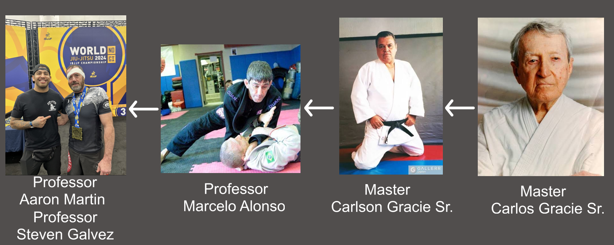

Lineage
My lineage is as follows:
I am a student of Professor Aaron Martin and Steven Galvez.
Aaron and Steven 3rd and 1st degree black belts under Professor Marcelo Alonso.
Professor Alonso is a 7th degree coral belt under Professor Carlson Gracie.
Carlson Gracie is a 9th degree red and black belt under Professor Carlos Gracie Sr.
Professor Carlos Gracie Sr. is a 10th degree red belt and one of the founders of Brazilian Jiu-Jitsu.
Lineage Map
